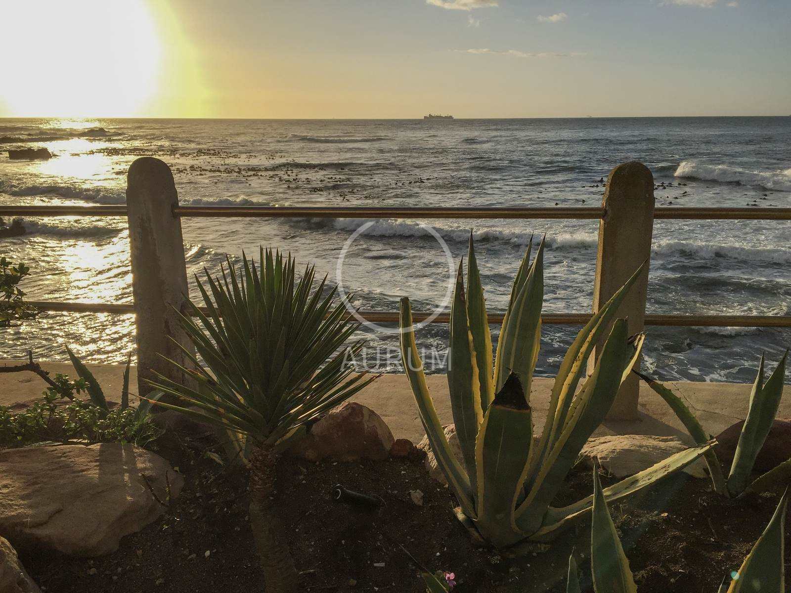

②대서양의 빛

케이프타운 서쪽 해안에서는 해가 바다로 진다. 그래서 저녁 산책로에서는 해가 정면에 있다. 길가 화단의 알로에 잎이 검은 실루엣이 되고, 나무 울타리 사이로 수면 전체가 금빛으로 부서진다.

케이프타운 서쪽 해안에서는 해가 바다로 진다. 그래서 저녁 산책로에서는 해가 정면에 있다. 길가 화단의 알로에 잎이 검은 실루엣이 되고, 나무 울타리 사이로 수면 전체가 금빛으로 부서진다.
시차 時差 · 160여 년 뒤의 관객
토머스 윌리엄 보울러
Thomas William Bowler, 1812–1869
캠스베이 언덕 난간 너머로 셔터를 눌렀어요. 둥근 바위, 청록 바다, 그 뒤 능선. 같은 세 겹을 160여 년 먼저 종이에 옮긴 사람이 있었어요.
길가 난간 너머로 둥근 화강암 바위가 바다까지 굴러 내려가 있었어요. 그 뒤로 청록 바다, 맨 뒤에 열두 사도 능선. 사진을 다시 펼쳐 보니 세 겹으로 딱 나뉘어 있더라고요.
보울러의 캠스베이 수채화도 똑같이 세 겹이에요. 앞에 둥근 바위, 가운데 바다, 뒤에 능선. 저도 제 「파도」가 호쿠사이의 파도와 닮았다는 걸 다 그리고 나서야 알고 당황한 적이 있어요. 그때 배운 게, 좋은 풍경은 보는 사람에게 비슷한 구도를 쥐여 준다는 거예요.
제가 고른 줄 알았던 구도는, 바다가 160년째 내주던 자리였어요.

AURUM 41 · 양승진
이스탄불 · 109년
그랑바자르 문 위에는 벽돌을 반달로 쌓은 아치와 하얀 육각 창이 있어요. 백 년쯤 전 그림 속 방에도 같은 아치와 같은 육각이 있었죠. 문 앞에 서서 한참을 올려다봤어요.
그림 속 방의 빛은 왼쪽 높은 창에서 들어와요. 제가 선 시장 골목의 빛도 같은 쪽에서 비스듬히 떨어지고 있었어요.
케이프타운 · 43년
도착한 날, 공항에서 시내로 가는 차 안에서 셔터를 서른 번 넘게 눌렀어요. 사진에 남은 건 난간과 산자락이에요. 클라크의 판화에도 낮은 담장과 그 너머 산이 겹으로 서 있어요.
담장 너머를 보는 눈높이가, 차창 너머를 보던 제 눈높이와 거의 같았어요.
요하네스버그 · 24년
집 벽에 그린 무늬는 선 하나도 쉬지 않고 이어져요. 바깥 테두리부터 안쪽으로, 굵은 선 옆에 가는 선을 하나씩 붙여 가며 면을 채우죠.
시장에서 본 담요 무늬가 바로 그 순서로 짜여 있었어요. 손이 기억하는 순서였어요.
차례
109년 · 오스만 함디 베이
43년 · 피터 클라크
24년 · 에스더 말랑구
160여 년 · 토머스 윌리엄 보울러
늦게 도착한 관객들. 같은 자리에 먼저 와 있던 사람의 그림을, 한참 뒤에야 알아보는 이야기예요.
썰물이 빠진 바위 사이에 작은 웅덩이가 남아 있고, 웅덩이마다 해가 하나씩 비친다. 모래사장 끝 방파제 위로는 해가 아직 제법 높다. 수평선에는 화물선 한 척이 점처럼 떠 있다.